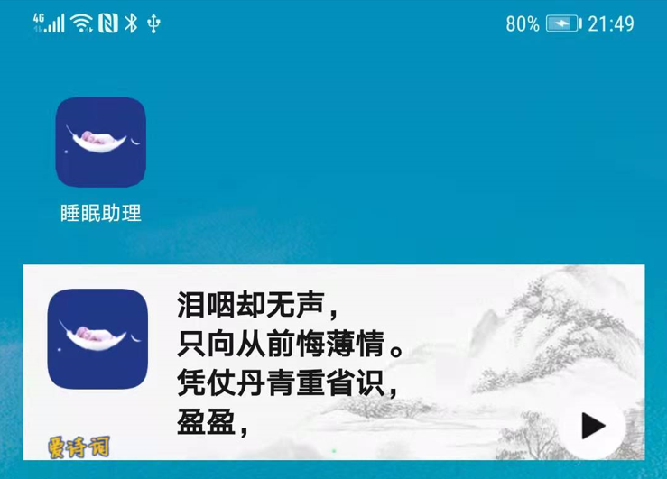

需求背景
Android系统支持应用创建显示在桌面上的小空间，也就是微件。按照官方文档介绍：应用微件是可以嵌入其他应用（如主屏幕）并接收定期更新的微型应用视图。详细内容可参考：官方文档。
随着Android版本不断迭代优化，微件的功能也在不断的调整，越来越多的功能收到支持。
由于应用属性问题，我公司研发的产品一致没有用到该功能。大家常用的微件包括：时钟小插件、记事本小贴纸、热点新闻、浏览器便捷搜索等。
为了研究该功能，今天我们在开源项目睡眠助理上实现诗词微件能力：爱诗词。相关功能已实现，具体代码可访问项目查看。
实现步骤
效果显示实现
第一步，新建ShiciWidgetProvider文件，使文件继承系统AppWidgetProvider类，并重写几个主要的方法：
public final class ShiciWidgetProvider extends AppWidgetProvider {
String Tag = "ShiciWidgetProvider";
@Override
public void onDisabled(Context context) {
super.onDisabled(context);
Log.d(Tag, "onDisabled");
}
@Override
public void onEnabled(Context context) {
super.onEnabled(context);
Log.d(Tag, "onEnabled");
}
@Override
public void onReceive(Context context, Intent intent) {
super.onReceive(context, intent);
Log.d(Tag, "onReceive : action = " + intent.getAction());
}
@Override
public void onUpdate(Context context, AppWidgetManager appWidgetManager, int[] appWidgetIds) {
super.onUpdate(context, appWidgetManager, appWidgetIds);
Log.d(Tag, "onUpdate");
final int counter = appWidgetIds.length;
Log.i(Tag, "counter = " + counter);
}
@Override
public void onAppWidgetOptionsChanged(Context context, AppWidgetManager appWidgetManager, int appWidgetId, Bundle newOptions) {
super.onAppWidgetOptionsChanged(context, appWidgetManager, appWidgetId, newOptions);
Log.d(Tag, "onAppWidgetOptionsChanged");
}
}
我们看到被重写的方法分别为：
onDisabled:在删除此提供程序的最后一个APPWIDGET实例时调用。
onEnabled：当实例化此provider程序的AppWidget时调用。
onReceive:实现广播接收者。onReceive对AppWidgetProvider上的各种其他方法进行调用。
onUpdate：当此provider程序被要求为一组APPWIDGET提供远程视图时调用。
onAppWidgetOptionsChanged：当这个APPWIDGET部件以新的尺寸展示时调用。
查看代码我们发现，在源码中onReceive法相内部实现action判断，通过对应的action调用其余方法。对应几个方法的action只能由系统发送，应用不能主动触发。
这几个方法内的具体逻辑实现可以先不实现，接下来我们绘制微件显示界面效果。
第二部，创建微件布局文件效果。我设置的界面显示一个水墨背景，左上侧显示应用图标，图标旁诗词内容。下方显示爱诗词图标，并且添加切换诗词按钮。效果如下：

创建微件布局文件widget_layout_shici代码如下：
<?xml version="1.0" encoding="utf-8"?>
<FrameLayout xmlns:android="http://schemas.android.com/apk/res/android"
android:id="@+id/flWidget"
android:layout_width="match_parent"
android:layout_height="match_parent">
<RelativeLayout
android:layout_gravity="center_vertical"
android:id="@+id/rlContent"
android:clipChildren="true"
android:layout_width="match_parent"
android:layout_height="wrap_content">
<ImageView
android:id="@+id/widget_bg"
android:importantForAccessibility="no"
android:layout_height="match_parent"
android:layout_width="match_parent"
android:scaleType="centerCrop"
android:src="@drawable/shici_bg_0" />
<ImageView
android:id="@+id/ivEpi"
android:src="@mipmap/ic_launcher"
android:layout_width="60dp"
android:layout_height="60dp"
android:layout_marginTop="10dp"
android:layout_alignParentTop="true"
android:importantForAccessibility="no"
android:layout_marginStart="10dp"
android:layout_alignParentStart="true"/>
<TextView
android:id="@+id/tvEpi"
android:layout_width="wrap_content"
android:layout_height="wrap_content"
android:textSize="16sp"
android:textStyle="bold"
android:textColor="@color/very_dark_violet"
android:ellipsize="end"
android:gravity="center_vertical"
android:layout_alignTop="@+id/ivEpi"
android:layout_marginStart="12dp"
android:layout_marginBottom="12dp"
android:layout_marginEnd="15dp"
android:layout_toEndOf="@+id/ivEpi"/>
<ImageView
android:id="@+id/ivTextLogo"
android:importantForAccessibility="no"
android:layout_alignParentBottom="true"
android:layout_height="wrap_content"
android:layout_width="wrap_content"
android:layout_marginLeft="10dp"
android:src="@drawable/aishici"/>
<ImageButton
android:background="@null"
android:id="@+id/ibPlay"
android:layout_width="wrap_content"
android:layout_height="wrap_content"
android:layout_gravity="end"
android:layout_alignParentBottom="true"
android:layout_alignParentRight="true"
android:layout_marginRight="10dp"
android:src="@drawable/ic_system_widgets_next_play" />
</RelativeLayout>
</FrameLayout>
第三步，我们在res/xml下创建微件provider文件widget_shici，引用上面创建的布局文件：
<?xml version="1.0" encoding="utf-8"?>
<appwidget-provider
xmlns:android="http://schemas.android.com/apk/res/android"
android:minWidth="250dp"
android:minHeight="60dp"
android:updatePeriodMillis="30"
android:initialLayout="@layout/widget_layout_shici"
android:resizeMode="none|horizontal|vertical"
android:widgetCategory="home_screen"/>
第四步，我们在清单文件（AndroidManifest.xml）内注册该微件，按照receiver广播的方式进行注册：
<receiver
android:label="@string/widget_i_shici"
android:name=".widget.ShiciWidgetProvider"
android:exported="true">
<intent-filter>
<action android:name="android.appwidget.action.APPWIDGET_UPDATE"/>
</intent-filter>
<meta-data
android:name="android.appwidget.provider"
android:resource="@xml/widget_shici"/>
</receiver>
其中meta-data中配置我们第三步创建的provider；intent-filter中是微件监听的广播（分为系统action和自定义action）。
intent-filter常用的系统action如下：
注意:这几个action只能由系统发送，应用不能主动触发。
完成以上四步后，微件的显示功能就实现了。此时可以安装应用，长按桌面添加微件。我定义的微件名为widget_i_shici（爱诗词），此时可以看到微件库中有一个爱诗词的选项，长按拖出即可显示。
数据显示实现
下面我们实现显示功能，我们发现当微件第一次创建显示时，会回调一次onUpdate方法。而在onUpdate回调方法中有三个参数，其中appWidgetManager实现对微件的变更管理操作；appWidgetIds是显示微件的ID。
那么拿到了这两个关键参数，我们就可以实现数据的显示了，我们调整onUpdate方法内容，如下：
@Override
public void onUpdate(Context context, AppWidgetManager appWidgetManager, int[] appWidgetIds) {
super.onUpdate(context, appWidgetManager, appWidgetIds);
Log.d(Tag, "onUpdate");
final int counter = appWidgetIds.length;
Log.i(Tag, "counter = " + counter);
for (int i = 0; i < counter; i++) {
int appWidgetId = appWidgetIds[i];
onWidgetUpdate(context, appWidgetManager, appWidgetId);
}
}
/**
* 窗口小部件更新
*/
private void onWidgetUpdate(Context context, AppWidgetManager appWidgeManger, int appWidgetId) {
Log.i(Tag, "appWidgetId = " + appWidgetId);
RemoteViews remoteViews = new RemoteViews(context.getPackageName(), R.layout.widget_layout_shici);
// 显示的诗词内容
String shiciContext = LauncherModel.getInstance().getSharedPreferencesManager().getString(IPreferencesIds.KEY_SHICI_CONTENT_LAST, "");
remoteViews.setTextViewText(R.id.tvEpi, shiciContext);
Log.i(Tag, "shiciContext = " + shiciContext);
appWidgeManger.updateAppWidget(appWidgetId, remoteViews);
}
此时再次安装应用，发现新建的微件上已经能显示诗词的内容了。
注意：每次需要删除微件并新建微件，改动才会生效。
动作监听实现
诗词已经显示了，最后我们要实现微件对点击动作的处理，也就是上面我们说的自定义action操作。
第一步，我们在清单文件添加了自定义的动作ACTION_PLAY_PAUSE声明：
<receiver
android:label="@string/widget_i_shici"
android:name=".widget.ShiciWidgetProvider"
android:exported="true">
<intent-filter>
<action android:name="android.appwidget.action.APPWIDGET_UPDATE"/>
<action android:name="com.devdroid.sleepassistant.widget.ACTION_PLAY_PAUSE"/>
</intent-filter>
<meta-data
android:name="android.appwidget.provider"
android:resource="@xml/widget_shici"/>
</receiver>
第二步，我们为更新按钮设置点击事件：
/**
* 窗口小部件更新
*/
private void onWidgetUpdate(Context context, AppWidgetManager appWidgeManger, int appWidgetId) {
Log.i(Tag, "appWidgetId = " + appWidgetId);
LauncherModel.getInstance().getSharedPreferencesManager().commitInt(IPreferencesIds.KEY_APP_WIDGET_ID, appWidgetId);
RemoteViews remoteViews = new RemoteViews(context.getPackageName(), R.layout.widget_layout_shici);
Intent intent = new Intent(context, ShiciWidgetProvider.class);
intent.setAction("com.devdroid.sleepassistant.widget.ACTION_PLAY_PAUSE");
remoteViews.setOnClickPendingIntent(R.id.ibPlay, PendingIntent.getBroadcast(context, 1, intent, PendingIntent.FLAG_UPDATE_CURRENT));
// 显示的诗词内容
String shiciContext = LauncherModel.getInstance().getSharedPreferencesManager().getString(IPreferencesIds.KEY_SHICI_CONTENT_LAST, "");
remoteViews.setTextViewText(R.id.tvEpi, shiciContext);
Log.i(Tag, "shiciContext = " + shiciContext);
appWidgeManger.updateAppWidget(appWidgetId, remoteViews);
}
此时我们重新安装应用，创建新的微件，点击更新按钮时会发现onReceive会被回调一次，并且Intent传入的action就是我们自定义的ACTION_PLAY_PAUSE。那么我们在onWidgetUpdate中缓存当前微件的id值appWidgetId，并且在onReceive中更新数据即可：
@Override
public void onReceive(Context context, Intent intent) {
super.onReceive(context, intent);
Log.d(Tag, "onReceive : action = " + intent.getAction());
String action = intent.getAction();
if("com.devdroid.sleepassistant.widget.ACTION_PLAY_PAUSE".equals(action)) {
updateShici();
AppWidgetManager appWidgeManger = AppWidgetManager.getInstance(context);
int appWidgetId = LauncherModel.getInstance().getSharedPreferencesManager().getInt(IPreferencesIds.KEY_APP_WIDGET_ID, 0);
if (appWidgetId != 0) {
onWidgetUpdate(context, appWidgeManger, appWidgetId);
}
}
}
private void updateShici() {
JinrishiciClient client = JinrishiciClient.getInstance();
client.getOneSentenceBackground(new JinrishiciCallback() {
@Override
public void done(PoetySentence poetySentence) {
DataBean dataBean = poetySentence.getData();
String shici = poetySentence.getData().getContent();
if (!TextUtils.isEmpty(shici)) {
LauncherModel.getInstance().getSharedPreferencesManager().commitString(IPreferencesIds.KEY_SHICI_CONTENT_LAST,shici);
}
}
@Override
public void error(JinrishiciRuntimeException e) {
}
});
}
我们看到，使用onReceive更新数据时，我们使用到了Context获取AppWidgetManager的方法：
AppWidgetManager appWidgeManger = AppWidgetManager.getInstance(context);
此时，我们再次安装应用，重新创建微件。我们发现点击更新按钮时已经能够更新数据了。
当前项目还有一个优化点，由于数据是从网络直接更新，所以我使用了异步处理，导致点击更新时是把缓存的旧诗词更新显示，新诗词请成功后会覆盖缓存。这个问题可以使用回调或者同步来进行解决。我这里暂时就不做优化了。
功能优化
新Activity栈打开
此时我们发现点击微件，会打开应用，我们若是希望打开指定页面如何实现？在该开源项目中，我们实现点击诗词时打开诗词页面，实现方式如下：
/**
* 窗口小部件更新
*/
private void onWidgetUpdate(Context context, AppWidgetManager appWidgeManger, int appWidgetId) {
Log.i(Tag, "appWidgetId = " + appWidgetId);
LauncherModel.getInstance().getSharedPreferencesManager().commitInt(IPreferencesIds.KEY_APP_WIDGET_ID, appWidgetId);
RemoteViews remoteViews = new RemoteViews(context.getPackageName(), R.layout.widget_layout_shici);
//设置点击监听
Intent intent = new Intent(context, ShiciWidgetProvider.class);
intent.setAction("com.devdroid.sleepassistant.widget.ACTION_PLAY_PAUSE");
remoteViews.setOnClickPendingIntent(R.id.ibPlay, PendingIntent.getBroadcast(context, 1, intent, PendingIntent.FLAG_UPDATE_CURRENT));
//打开诗词界面
Intent intent4 = new Intent(context, ShiciActivity.class);
remoteViews.setOnClickPendingIntent(R.id.rlContent, PendingIntent.getActivity(context, 4, intent4, PendingIntent.FLAG_UPDATE_CURRENT));
// 显示的诗词内容
String shiciContext = LauncherModel.getInstance().getSharedPreferencesManager().getString(IPreferencesIds.KEY_SHICI_CONTENT_LAST, "");
remoteViews.setTextViewText(R.id.tvEpi, shiciContext);
Log.i(Tag, "shiciContext = " + shiciContext);
appWidgeManger.updateAppWidget(appWidgetId, remoteViews);
}
此时发现点击诗词可以打开诗词界面。但是仔细体验发现，此时打开的页面和点击应用图标打开的页面会使用同一个Activity栈，导致返回时不能一步返回到桌面。我们可以添加Intent启动模式：
//打开诗词界面
Intent intent4 = new Intent(context, ShiciActivity.class);
intent4.addFlags(Intent.FLAG_ACTIVITY_NEW_DOCUMENT | Intent.FLAG_ACTIVITY_MULTIPLE_TASK);
remoteViews.setOnClickPendingIntent(R.id.rlContent, PendingIntent.getActivity(context, 4, intent4, PendingIntent.FLAG_UPDATE_CURRENT));
此时此时界面打开就没有问题了。
问题更新（2022.04.14）
长按微件有边框
最近发信一个新问题，就是我开发的微件当作应用图标使用，当长按微件会出现一个边框，如下图美团微件。但是我长按有些应用的微件时，他们竟然和长按应用图标一样，不会出现边框。当时很费解，然后查询资料、对比代码，这个小问题竟然搞了一下午。

最终发现是配置问题，当我移除resizeMode时，功能正常了。
<?xml version="1.0" encoding="utf-8"?>
<appwidget-provider
xmlns:android="http://schemas.android.com/apk/res/android"
android:minWidth="250dp"
android:minHeight="60dp"
android:updatePeriodMillis="30"
android:initialLayout="@layout/widget_layout_shici"
android:resizeMode="none|horizontal|vertical"
android:widgetCategory="home_screen"/>
android:resizeMode="none|horizontal|vertical"是什么呢？
看描述：
The rules by which a widget can be resized. See RESIZE_NONE, RESIZE_NONE, RESIZE_HORIZONTAL, RESIZE_VERTICAL, RESIZE_BOTH.
This field corresponds to the android:resizeMode attribute in the AppWidget meta-data file.
Value is either 0 or a combination of RESIZE_HORIZONTAL, and RESIZE_VERTICAL
翻译：
可以调整小部件大小的规则。 请参阅 RESIZE_NONE、RESIZE_NONE、RESIZE_HORIZONTAL、RESIZE_VERTICAL、RESIZE_BOTH。
该字段对应于 AppWidget 元数据文件中的 android:resizeMode 属性。
值为 0 或 RESIZE_HORIZONTAL 和 RESIZE_VERTICAL 的组合